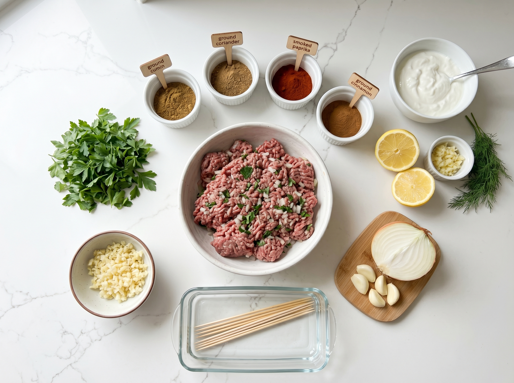
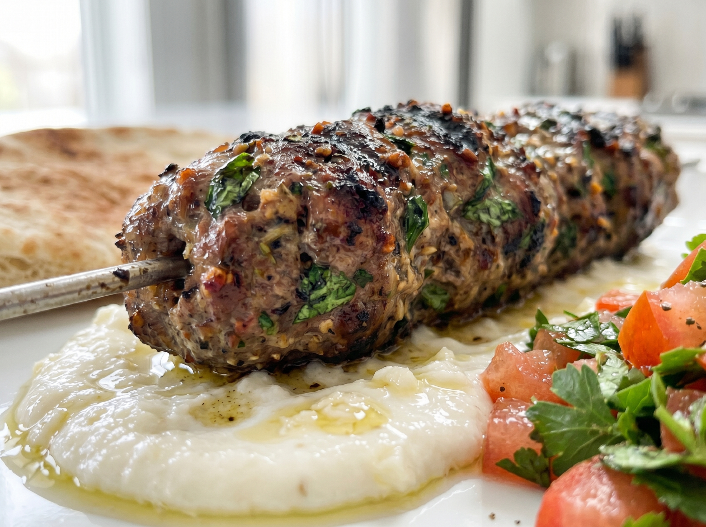

These ground beef kofta are the kind of recipe that becomes a weekly staple after the first time you make them. Juicy, deeply spiced beef patties — fragrant with cumin, coriander, and a whisper of cinnamon — pan-seared until caramelized and served with a cool, garlicky dipping sauce. On the table in 30 minutes, and the flavor is genuinely outstanding.
Kofta is a dish beloved across the Middle East, South Asia, and the Mediterranean, and it's taken off in American home kitchens in a big way — especially in the age of bowl meals and globally inspired weeknight dinners. The spice combination might look long at first glance, but all of these are pantry staples you'll use again and again. Once you've made kofta, you'll understand why these spices are called "warm" — they fill the kitchen with an aroma that makes everyone wander in asking what's cooking.
Why You'll Love This Recipe
- Bold, complex flavor — warm spices make these anything but boring ground beef
- 30 minutes total — fast enough for weeknights
- Budget-friendly — ground beef is one of the most affordable proteins
- That garlic sauce — cool, creamy, garlicky, and completely addictive
- Meal prep champion — kofta reheat beautifully for 4 days
The Kofta Spice Blend: What Each One Does
Every spice in this blend earns its place:
- Cumin — the earthy, warm backbone of Middle Eastern beef dishes. Essential.
- Coriander — the dried seed (not the fresh herb/cilantro) adds a citrusy, nutty note.
- Paprika — color and mild sweetness. Use smoked paprika for a deeper flavor.
- Cinnamon — the secret weapon. Just ½ teaspoon creates warmth and complexity without tasting like dessert.
- Allspice — a single spice that tastes like a blend of cinnamon, cloves, and nutmeg. Common in Middle Eastern cooking, available at any US grocery store.
Find all of these in the spice aisle at Walmart, Kroger, Whole Foods, or Trader Joe's. Buying them together once means you can make this recipe, the shawarma bowl, and many other Middle Eastern-inspired dishes repeatedly.
The Garlic Sauce
Our quick garlic sauce uses mayonnaise as a base — it takes 2 minutes to make and delivers a creamy, sharp garlic punch that complements the warm spiced meat perfectly. The lemon juice adds brightness, and a little water thins it to a perfect drizzling consistency. Make it first so the flavors develop while you cook the kofta.
Ground Beef Kofta with Creamy Garlic Sauce
Juicy, warmly spiced beef patties with a cool garlic dipping sauce. Bold flavors, simple technique, 30 minutes.
Ingredients

Kofta
Creamy Garlic Sauce
To Serve
Instructions
- 1
Make the garlic sauce first. Whisk together mayonnaise, grated garlic, lemon juice, and water until completely smooth. Season with salt. Refrigerate while you make the kofta — the flavors need a few minutes to develop and mellow.
- 2
Make the kofta mixture. Grate the onion on the medium holes of a box grater. Use your hands to squeeze out as much moisture as possible (wet onion makes the kofta fall apart). Add grated onion, garlic, parsley, and all spices to the ground beef. Mix gently with your hands — just enough to combine. Don't overwork the meat or it becomes dense.
- 3
Shape the kofta. With slightly damp hands, divide the mixture into 12 equal portions (about 2 oz each). Shape each into an oval patty about 3 inches long and 1 inch thick. Flatter patties cook faster and more evenly. Place on a plate.
- 4
Cook in batches. Heat olive oil in a large skillet over medium-high heat. Add kofta in a single layer — don't crowd the pan. Cook undisturbed for 3–4 minutes until a deep brown crust forms on the bottom. Flip and cook another 3–4 minutes. Internal temperature should reach 160°F / 71°C for ground beef. Cook in 2 batches if needed.
- 5
Serve. Arrange kofta on a serving platter. Drizzle garlic sauce over the top or serve it on the side for dipping. Add fresh tomatoes, cucumber, parsley, and pickled onions. Serve with warm pita or over rice.

Pro Tips for Juicy, Flavorful Kofta
- Squeeze the onion dry. This is crucial — too much onion moisture makes the kofta wet and causes them to fall apart in the pan. Squeeze aggressively in your fists.
- Don't overmix. Mix just until the ingredients are combined. Overworking ground beef develops the proteins and makes it dense and tough.
- Chill for 15 minutes (optional). If you have time, refrigerate the shaped kofta for 15 minutes before cooking. They hold their shape better and develop more flavor.
- Make it spicier. Add ¼ teaspoon cayenne pepper to the spice blend for a gentle heat. Increase to ½ teaspoon if you like it hot.
Variations
- Ground lamb: Substitute half or all of the beef with ground lamb for a more traditional flavor — lamb is wonderful with these spices.
- Grilled kofta: Thread the kofta onto metal skewers and grill over medium-high heat, 3–4 minutes per side. Perfect for summer cookouts.
- Baked version: Place on a lined baking sheet and bake at 400°F / 205°C for 20–22 minutes, flipping halfway through.
- Kofta bowl: Serve over rice with garlic sauce, cucumber, tomatoes, and a drizzle of tahini for a complete bowl meal.
Serving Suggestions
- Warm pita bread — wrap the kofta inside with garlic sauce, tomatoes, and cucumbers for a sandwich-style meal. Pita is available at Trader Joe's, Whole Foods, and most grocery stores.
- Over fluffy white or basmati rice — the garlic sauce doubles as a rice sauce
- With a simple chopped salad of cucumber, tomato, parsley, and lemon
- Alongside hummus — store-bought from Trader Joe's or Whole Foods is excellent
- With roasted potatoes for a heartier plate
Storage & Reheating
Refrigerator
Cooked kofta keep for 4 days. Garlic sauce keeps for 5 days. Store separately.
Freezer
Freeze cooked kofta for up to 3 months. Freeze raw shaped kofta on a tray, then transfer to a bag.
Reheat
Warm in a skillet over medium heat for 3–4 minutes, or microwave covered for 90 seconds.
Frequently Asked Questions
What is kofta exactly?
Kofta (also spelled kefta or köfte depending on the country) is a family of dishes common across the Middle East, South Asia, the Mediterranean, and Eastern Europe. It refers to seasoned ground meat shaped into patties, balls, or cylinders and then grilled, pan-fried, or baked. The spice blends vary by region, but warm spices like cumin, coriander, and cinnamon are common threads.
What is allspice and where do I buy it?
Allspice is a dried berry native to Jamaica and Central America that tastes like a combination of cinnamon, cloves, and nutmeg — hence the name "allspice." It's not a spice blend; it's a single spice. You'll find it in the spice aisle at every US grocery store including Walmart, Target, Kroger, and Whole Foods. McCormick is the most widely available brand.
Can I make these ahead of time?
Yes — shape the kofta up to 24 hours ahead and store covered in the fridge. The flavors actually develop and intensify overnight. You can also mix the meat mixture and refrigerate it, then shape and cook when ready.
My kofta are falling apart — what went wrong?
Usually one of two things: the onion wasn't squeezed dry enough (wet onion adds too much moisture), or the mixture was overmixed (which breaks down the proteins that hold the patties together). Also, don't flip the kofta too early — wait until a crust forms on the bottom and they release naturally from the pan.
Nutrition Information
Per serving (3 kofta with garlic sauce, without rice or bread). Values are estimates.
| Nutrient | Amount |
|---|---|
| Calories | 430 kcal |
| Total Fat | 28g |
| Protein | 34g |
| Carbohydrates | 8g |
| Sodium | 610mg |
You Might Also Love


Tried This Recipe?
Tell me in the comments how you served them — in a wrap, over rice, or straight from the plate! Pin this recipe to your weeknight dinners board on Pinterest.
📌 Save on Pinterest